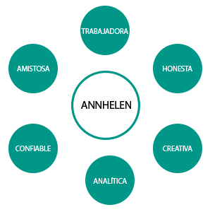

CURRÍCULUM online
Annhelen Cervera Saldaña
Developer Analyst
Fecha de nacimiento: 14/03/1992
Email: annycerverasaldana@gmail.com
Teléfono: +034 659 476 910
Av. del Manzanares, 24, 28011
MADRID
HABILIDADES
Resolución de Problemas
Trabajo en Equipo
Creatividad e iniciativa propia
Capacidad de liderazgo
Aprendizaje rápido
Organización
IDIOMAS
Español (Nativo)
Inglés
PERFIL
Gracias por visitar mi web currículum online! Aquí podrás encontrar información interesante
sobre mí: Mi formación académica, experiencia profesional, habilidades adquiridas a lo largo de mi trayectoria
e incluso mis redes sociales para que puedas ponerte en contacto conmigo.
Soy una amante del mundo del desarrollo software, hambrienta de nuevos conocimientos por descubrir en este mundo
que muy pocos son los que se atreven adentrarse en él.
SOBRE MÍ
ESCANEA CÓDIGO QR
(Vídeo presentación)
EXPERIENCIA LABORAL
Desarrollador Web Backend - Ticketbureau.com / Wildbit Studios
Jun 2017 - Actualmente
Desarrollo de una API para servir los diferentes recursos que necesita la web de Ticketbureau.com. Tecnologías usadas para este proyecto: PHP 7, Yii 2, Vagrant, SQL, Valentina.
Desarrollador Web Frontend - Telefónica / Wildbit Studios
Oct 2016 - Jun 2017
Desarrollo de una aplicación web para uso interno de Telefónica; dicha aplicación consiste en realizar conexiones con su servidor para la autenticación y tener acceso a los diferentes recursos (API) que puedan ser necesarios para el usuario. Además, de ser capaz de ejecutarse tanto en dispositivos IOSx como en dispositivos Windows. Las tecnologías empleadas para llevar a cabo dicho desarrollo son Angular2, Typescript, HTML5, CSS3 y Cordova (para el empaquetado de la aplicación para las diferentes plataformas en la que debe ser ejecutada).
Analista Programador - GameHouse / Wildbit Studios
Mar 2016 - Ago 2016
Como Analista, llevé a cabo la gestión y supervisión de varios proyectos para la productora de videojuegos GameHouse como cliente. Como programadora, desarrollé videojuegos en entorno Web, utilizando HTML 5, CSS3, Javascript y frameworks adaptados para dicho desarrollo como Cocos 2d-js.
Desarrollador Web Frontend y Backend - Antena3 (Atresmedia) / Wildbit Studios
Jul 2015 - Mar 2016
Gestioné y desarrollé tres proyectos webs para el cliente A3Media (Antena3), empleando para dicho desarrollo diversas tecnologías como HTML5, CSS3, JavaScript, JQuery, PHP 5, Boostrap, Web Services y APIs REST, base de datos Mysql y desarrollo de un CMS como Wordpress (custom themes y plugins).
Desarrollador Web Frontend y Backend / Freelance
Nov 2015 - Abr 2016
Desarrollo funcional de la web oficial y del CMS de la Escuela de formación Aguanorte. Tecnologías empleadas: PHP 5, Javascript, CSS3, HTML5, JQuery, MySql.
Técnico Informático / ESNE, Escuela Universitaria
Nov 2015 - Abr 2016
Ejercí diferentes tareas en el Departamento de Informática de la Universidad, tales como el desarrollo de la web de la Escuela,
mantenimiento del Campus Virtual, mantenimiento del software y hardware en entornos Windows y Macintosh, solución de incidencias técnicas de
todo el material informático de la escuela. Tecnologías empleadas para el desarrollo web: Php5, HTML5, Mysql, JavaScript, JQuery.
FORMACIÓN ACADÉMICA
Grado en Ingeniería del Software
2014 - Actualmente
Universidad Rey Juan Carlos I
Técnico Superior en Desarrollo de Aplicaciones Web
2011 - 2013
I.E.S Alonso de Madrigal
Técnico Superior en Administración de Sistemas Informáticos
2009 - 2011
I.E.S Alonso de Madrigal